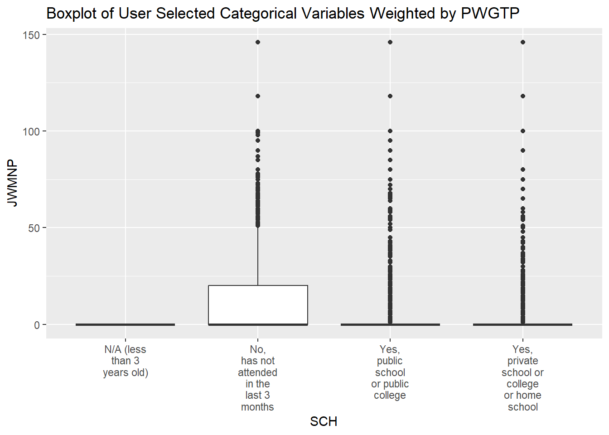

library("tidyverse")
library("censusapi")
library("tidycensus")
library("jsonlite")
library("dplyr")
library("lubridate")
library("ggplot2")ST588 Project 1
Matt Bray
Tyler Hunt
Matt Bray
Tyler Hunt
Project Introduction
In our Data Science for Statisticians course we have learning how to do the following:
- Work with Base R
- Leverage the tidyverse library to read, manipulate and analyze data
- Build functions
- Build API Calls
Using this (nonexhaustive) list of skills and more, we are going to explore person-level data within the Public Use Microdata Sample (PUMS) Census dataset. Throughout this document we will build functions to read, summarize and plot the data. We will provide a narrative that explains the code and the functionality.
Install Packages
Before getting into functions and technical details, it is important that the user have the appropriate packages installed and read into the session. Without these libraries the code will NOT run.
Notes for user: You should load the packages in the below code chunk using install.packages() to load on your local machine.
Basic API Testing
Before building our API from scratch, lets use a specific API URL to ensure that we can retrieve data from the API, parse the data, and format as a tibble.
Below we are calling the GET function from the httr library to retrieve data from this API URL https://api.census.gov/data/2022/acs/acs1/pums?get=SEX,PWGTP,MAR&SCHL=24. Feel free to copy and paste this into your web browser. You should see some data in your web browser.
In the below, the output is less friendly…
censusApiTest <- httr::GET(paste('https://api.census.gov/data/2022/acs/acs1/pums?get=SEX,PWGTP,MAR&SCHL=24'))
censusApiTestResponse [https://api.census.gov/data/2022/acs/acs1/pums?get=SEX,PWGTP,MAR&SCHL=24]
Date: 2024-10-05 15:01
Status: 200
Content-Type: application/json;charset=utf-8
Size: 938 kB
[["SEX","PWGTP","MAR","SCHL"],
["2","6","5","24"],
["2","23","2","24"],
["1","23","3","24"],
["1","80","5","24"],
["1","16","1","24"],
["1","107","3","24"],
["2","10","5","24"],
["1","22","1","24"],
["2","127","5","24"],
...Below, we are building a function that takes the raw data (the input) and returns a tibble as the output. We are using a combination of pre-built functions from our libraries to parse the raw data to JSON. The first row represents our column headers while the rest of the rows represent the data points.
We construct the tibble by passing the data points and using our headers to assign column names to the tibble.
You can see the output is much prettier (and easier to work with) than before!
rawToTibble <- function(rawData){
jsonData <- fromJSON(rawToChar(rawData$content))
## Extract column names
colNames <- jsonData[1,]
# Remove the first row from the data
jsonData <- jsonData[-1,]
tibbleData <- as_tibble(jsonData)
colnames(tibbleData) <- colNames
return(tibbleData)
}
rawToTibble(censusApiTest)# A tibble: 44,079 × 4
SEX PWGTP MAR SCHL
<chr> <chr> <chr> <chr>
1 2 6 5 24
2 2 23 2 24
3 1 23 3 24
4 1 80 5 24
5 1 16 1 24
6 1 107 3 24
7 2 10 5 24
8 1 22 1 24
9 2 127 5 24
10 2 46 5 24
# ℹ 44,069 more rowsSome Helper Functions for Querying the API
Our functions used the build and query APIs rely on a series of other functions. These other functions were built to segment complex problems into modules, reduce duplicate code and improve readability for technical users.
Brief explanations fo each helper function:
- checkVarsValid - Our function used to query the API can only accept certain variables. This function ensures the variables passed by the user (vars) are all in the list of valid variables (validVars). If not, the function will stop and tell the user that they have provided an invalid variable(s).
- varsLkpTibble - Sometimes our variables require that the user lookup those variables and fetch a different attribute from that lookup. These values can vary year to year, so the user must pass the year, the name of the variable and a column name for the lookup value (just “lkpVal” by default). A tibble is returned.
- midTimeFunc - Some variables represent an interval of time. We want to return the midpoint of that interval, but the raw data type is not user friendly. This function takes start and ends of the interval in the format “3:29 p.m.” and transforms into HMS format
- lkpToMiddleTime - This helper function leverages our two (2) previous helper functions to lookup time intervals in the string format “3:29 p.m. to 3:33 p.m”, retrieve the median in the interval, cast as HMS format and return the transformed tibble.
- factorLkp - When given categorical variables as integers (1,2,3…etc) we want to return meaningful character values. We again use our helper function varsLkpTibble to lookup the values for a specific year. Using the factor() function, we pass our original data points, an ordered list of integers as our levels and the paired character values as our labels. This is also applied directly to a tibble
checkVarsValid <- function(vars,validVars){
if (!all(vars %in% validVars)) {
stop("Invalid variables: ", paste(vars[!vars %in% validVars], collapse = ", "))
}
}
varsLkpTibble <- function(year,varName,lkpVal="lkpVal"){
rawData <- httr::GET(url=paste0('https://api.census.gov/data/',year,'/acs/acs1/pums/variables/',varName,'.json'))
jsonData <- fromJSON(rawToChar(rawData$content))
tibbleData <- as_tibble(jsonData$values$item)
tibbleData <- tibbleData %>%
pivot_longer(cols=names(tibbleData),
names_to = varName,
values_to = lkpVal
)
return(tibbleData)
}
midTimeFunc <- function(startTime,endTime){
midAddlSecs <- as.numeric(difftime(endTime,startTime,units="secs"))/2
midTotalSecs <- as.numeric(startTime) + midAddlSecs
midhours <- floor(midTotalSecs/(60*60))
midminutes <- floor((midTotalSecs-(60*60*midhours))/60)
midseconds <- floor((midTotalSecs-(60*60*midhours)-60*midminutes)/60)
timeString <- paste(midhours,midminutes,midseconds,sep=":")
hmsTime <- hms::parse_hms(timeString)
return(timeString)
}
lkpToMiddleTime <- function(tibble,year=2022,timeVar){
apiData <- varsLkpTibble(year=year,varName = timeVar,lkpVal = "TIME_INTERVAL")
intervalTibble <- inner_join(tibble,apiData)
returnData <- intervalTibble %>%
select(-c(timeVar)) %>%
mutate(TIME_INTERVAL = ifelse(TIME_INTERVAL == "N/A (not a worker; worker who worked from home)", NA, TIME_INTERVAL))
names(returnData) <- c(names(returnData)[1:(length(names(returnData))-1)],timeVar)
returnData <- returnData %>%
separate_wider_delim(timeVar,delim = " to ",names=c('StartTime','EndTime'),too_few=c('align_start')) %>%
mutate(StartTime = parse_time(gsub("\\.", "", StartTime),format = "%I:%M %p"),
EndTime = parse_time(gsub("\\.", "", EndTime),format = "%I:%M %p"),
MidTime = ifelse(!is.na(StartTime), midTimeFunc(StartTime,EndTime),NA)
)
returnData[[timeVar]] <- hms::as_hms(returnData$MidTime)
returnData <- returnData %>%
select(-c('StartTime','EndTime','MidTime'))
return(returnData)
}
factorLkp <- function(tibbleData,year,catVar){
apiData <- varsLkpTibble(year=year,varName = catVar)
x <- tibbleData[[catVar]]
levels <- sort(as.numeric(unique(x)))
apiData[[catVar]] <- as.numeric(apiData[[catVar]])
apiData <- apiData %>%
filter(get(catVar) %in% levels) %>%
arrange(get(catVar))
labels <- apiData$lkpVal
newVec <- factor(x=x,levels=levels,labels = labels)
tibbleData[[catVar]] <- newVec
return(tibbleData)
}Querying the API
Finally, we are building our function to query the API.
Inputs/Parameters
The user will pass the year (default = 2022), a vector of numeric variables (default = “AGEP”,“PWGTP”), a vector of categorical variables (default = “SEX”), a geography level (default = “ALL”). Optionally, the user can also pass the specific identifier for that geography level if they choose.
Parameter Validation
The first part of the function validates that parameters meet certain criteria. That criteria is as follows:
- Only one year value should be passed in the parameter
- The year parameter value should be between 2010 & 2022
- Numeric variables, categorical variables and the geography level had to be valid variables in a pre-approved list
- One numeric variables other than PWGTP had to be passed in the numericVars parameter.
- One categorical variable must be passed in the catVars parameter
If these criteria are not met, a detailed stop() message is returned by the function
Using Parameters to Construct API
To construct the API URL, we need the constant components (base), the year, a list of variables and the geography specification. Year is directly passed by the user with no transformations. We create our variables list by unioning the numericVars and catVars parameter values and delimiting with a comma (,).
For the geography specification, we use switch() and if else functions to follow these generic rules:
- If the user passes “All” in geographyLevel, return an empty string
- If the user passes another value in geography level return in the following format “geographyLevel:geographySpec”. An example is “state:17”
- If the user passes another value in geography level and does NOT include a geography spec, return everything for that level in the format (example) of “state:*”, with an asterik representing all.
Paste all of these string values together to construct the API and use httr:get() and our helpfer function the return a tibble called “data”
Post API Transformations
All of the values in the tibble are “character” data type and our category variable values are keys.
To make this more usable we are….
- Converting our numeric variables to “numeric” type
- Looking up time values for our time variables and returning the median time in the provided interval in HMS format
- Lookup up categorical values and apply our factor function.
retrieveCensus <- function(year=2022,numericVars=c("AGEP","PWGTP"),catVars=c("SEX"),geographyLevel =c("All"),geographySpec = NULL){
# Check if year is a single value AND the value passed is between 2010 and 2022
if (length(year)!=1){
stop("A single year must be passed")
}
if (year < 2010 | year > 2022){
stop("The year passed must be between 2010 & 2022")
}
# Check if values passed in the numericVars (catVars) are within the numericOptions (catOptions) vector(s)
numericReq <- "PWGTP"
numericOptions <- c("AGEP","GASP","GRPIP","JWMNP","PWGTP")
timeOptions <- c("JWAP","JWDP")
numericTimeOptions <- c(numericOptions,timeOptions)
checkVarsValid(var=numericVars,validVars = numericTimeOptions)
catOptions <- c("FER","HHL","HISPEED","JWTRNS","SCH","SCHL","SEX")
checkVarsValid(vars=catVars, validVars = catOptions)
geographyOptions <- c("All","Region","Division","State")
checkVarsValid(vars=geographyLevel, validVars = geographyOptions)
## If PWGTP not in the numericVars parameter, add it
if (numericReq %in% numericVars) {
numericVars <- numericVars
} else {
numericVars <- c(numericVars,numericReq)
}
## Check to make sure the number of numeric variables that will be returned is NOT < 2. The number of categorical variables should not be < 1
if (length(numericVars) < 2) {
stop("One numeric variable other than ", paste(numericReq)," must be given in the numericVars parameter")
}
if (length(catVars) < 1) {
stop("One categorical variable must be given to be returned")
}
## If all variables are of valid length and valid values, paste them together to be passed in the API call
regioninPrefix <- switch(
geographyLevel,
All = "",
Division = "division",
Region = "region",
State = "state"
)
regioninSuffix <- ifelse(is.null(geographySpec),"*",geographySpec)
regioninString <- if(regioninPrefix!=""){paste0('&for=',regioninPrefix,":",regioninSuffix)}
allVarsReq <- c(numericVars,catVars)
varString <- NULL
for (value in allVarsReq){
varString <- paste0(varString,value,if(value != allVarsReq[length(allVarsReq)]){","})
}
## Build API, fetch data, convert to tibble
apiURL <- paste0('https://api.census.gov/data/',year,'/acs/acs1/pums?get=',varString,regioninString)
rawData <- httr::GET(apiURL)
data <- rawToTibble(rawData)
## Change data types
for (value in intersect(numericVars,timeOptions)){
data <- lkpToMiddleTime(data,year=year,timeVar = value)
}
data[numericVars[numericVars %in% numericOptions]] <- lapply(data[numericVars[numericVars %in% numericOptions]],as.numeric)
for (value in catVars){
data <- factorLkp(data,year=year,catVar = value)
}
return(data)
}Using our API Function
Lets show an example of how our API call works (and that it works). For a state (code 17), we want to retrieve AGEP,PWGTP,JWDP,FER and SEX variables from the 2022 PUMS data set.
AGEP,PWGTP are numeric. JWDP is time value. FER and SEX are categorical
We see in the output the rules defined in the previous section have been followed.
state17 <- retrieveCensus(year=2021,numericVars=c("AGEP","PWGTP","JWDP"),catVars=c("FER","SEX","SCHL"),geographyLevel = "State",geographySpec = 17)
state17# A tibble: 85,053 × 7
AGEP PWGTP FER SEX SCHL state JWDP
<dbl> <dbl> <fct> <fct> <fct> <chr> <tim>
1 37 104 N/A (less than 15 years/greater than 50 … Male Grad… 17 NA
2 48 29 No Fema… Regu… 17 NA
3 66 19 N/A (less than 15 years/greater than 50 … Fema… Mast… 17 NA
4 51 84 N/A (less than 15 years/greater than 50 … Male No s… 17 NA
5 86 4 N/A (less than 15 years/greater than 50 … Male 1 or… 17 NA
6 32 86 N/A (less than 15 years/greater than 50 … Male GED … 17 NA
7 61 30 N/A (less than 15 years/greater than 50 … Fema… Regu… 17 NA
8 50 38 No Fema… Regu… 17 NA
9 74 6 N/A (less than 15 years/greater than 50 … Fema… Grad… 17 NA
10 36 8 N/A (less than 15 years/greater than 50 … Male Regu… 17 NA
# ℹ 85,043 more rowsWhat if I want multiple years of data?
For multiple years of data, we have to make a separate API call and data processes for EACH year and union these datasets together in one tibble.
Our function takes in the same parameters as our previous function for single year. This is because we are iterating through each value in our year vector, grabbing the same variables form that years API and then appending.
To know what year the data came from, we append the “year” to the unioned tibble.
retrieveMultiYearCensus <- function(years=c(2022),numericVars=c("AGEP","PWGTP"),catVars=c("SEX"),geographyLevel =c("All"),geographySpec = NULL) {
combinedTibble <- retrieveCensus(year=years[1],numericVars=numericVars,catVars=catVars,geographyLevel=geographyLevel,geographySpec = geographySpec)
combinedTibble$year <- years[1]
for (i in 2:length(years)) {
yearTibble <- retrieveCensus(year=years[i],numericVars=numericVars,catVars=catVars,geographyLevel=geographyLevel,geographySpec = geographySpec)
yearTibble$year <- years[i]
combinedTibble <- dplyr::union(combinedTibble,yearTibble)
}
return(combinedTibble)
}Using our multi-year function
Again, this is the same function so the arguments for retrieveMultiYearCensus are almost identical to retrieveCensus. The only difference is retrieveMultiYearCensus accepts a multi-value vector of years.
Lets test this on years 2021 and 2022 with a state (code 17). We will return our default parameters.
state17MultiYear <- retrieveMultiYearCensus(years=c(2021,2022),geographyLevel = "State",geographySpec = 17)
state17MultiYear# A tibble: 81,469 × 5
AGEP PWGTP SEX state year
<dbl> <dbl> <fct> <chr> <dbl>
1 37 104 Male 17 2021
2 48 29 Female 17 2021
3 66 19 Female 17 2021
4 51 84 Male 17 2021
5 86 4 Male 17 2021
6 32 86 Male 17 2021
7 61 30 Female 17 2021
8 50 38 Female 17 2021
9 74 6 Female 17 2021
10 36 8 Male 17 2021
# ℹ 81,459 more rowsTest retrieveCensus function
This test dataset is intended to test that data called from the API using the retrieveCensus function will be usable by the censusSummerizR function below.
- numeric and categorical variables were selected psuedo-randomly to test function.
- extracted data were placed into
censusDataobject.
censusData<-retrieveCensus(year=2022, numericVars=c("AGEP", "GASP", "PWGTP", "JWAP", "JWDP"), catVars = c("SEX", "HHL"),geographyLevel = "State", geographySpec = 17)Check retrieveCensus function output object structure.
The code chunk below can be used to visualize the structure of the data extracted by the retrieveCensus function. These visualizations can be helpful to understand the types of data presented (in truncated form), some representative values, and help the developer think of ways these data can be manipulated during creation of downstream functions. names shows the column names, length() give us a number of items in the object, str() tells us the stucture of the object, and calling censusData shows us the first 1000 rows of the object. This code will run, but we will not display the output to conserve space!
Create custom summary function
The censusSummerizR function takes the dataset object that is output from the retrieveCensus function and outputs a named list of the following:
- Sample Mean and Sample Standard Deviation for the numeric variables
- Sample counts of observations categorized by factor levels for factor variables
The censusSummerizR function takes the full dataset object and splits into two seperate datasets that are susequently utilized for statistical calulations and counts, as appropriate:
- An object of numeric data
- An object of categorical data
The user selects from a list of both numeric and categorical variables to summarize and if the variable requested by the user is not present in the supplied source dataset, the procedure stops and alerts the user:
"You cannot subset data that was not pulled from API, re-pull desired variables"
The output of the censusSummerizR function is a list of tibbles that contain:
- A single tibble that calculates sample mean and sample standard deviation for all numeric variables, and
- An individual tibble that summarizes counts of each factor for that variable
Notes to user: censusSummerizR function will calculate weighted sample mean and weighted sample standard deviations for the numeric variables of interest and will calculate counts of the categorical variables of interest. User should select variables to summarize that were pulled from the PUMS Census API using one of the retrieveCensus or retrieveMultiYearCensus functions. Variables not in your starting dataset will cause censusSummerizR to stop. PWGTP should not be summarized as it is an observation weight.
censusSummerizR <- function(x, numericVars=c("AGEP","GASP","GRPIP","JWMNP"), catVars=c("FER","HHL","HISPEED","JWTRNS","SCH","SCHL","SEX")){
#check user requested variables and create numeric and factor/character datasets to summarize seperately based on user choice of variables to explore
numericDataDefault <- x |>
select(where(is.numeric))
charDataDefault <- x|>
select(where(is.factor))
if(length(names(numericDataDefault))<length(numericVars)){
stop("You cannot subset data that was not pulled from API, re-pull desired variables")
}
if(length(names(charDataDefault))<length(catVars)){
stop("You cannot subset data that was not pulled from API, re-pull desired variables")
}
if(length(names(numericDataDefault))>length(numericVars)){
numericData<- x |>
select(numericVars)
} else {
numericData<- numericDataDefault |>
select(where(-"PWGTP"))
}
if(length(names(charDataDefault$names))>length(catVars)){
charData<- x |>
select(catVars)
} else {
charData<- charDataDefault
}
#create loop to mean each variable from numericData and place in list with name
splMean <- list()
for(i in 1:length(numericData)){
splMean[[i]] <- as.numeric((sum(numericData[[i]] %*% x$PWGTP)/sum(x$PWGTP)))
names(splMean)[i]<-paste(names(numericData[i]))
}
#create loop to calculate sample SD from numericData and place in list with name
splSD <- list()
for(i in 1:length(numericData)){
splSD[[i]] <- (sqrt(sum(numericData[[i]]^2 %*% x$PWGTP)/sum(x$PWGTP)-splMean[[i]]^2))
names(splSD)[i]<-paste(names(numericData[i]))
}
#coerce splMean and splSD to Tibbles
splMeanTbl<-as_tibble(splMean)
splSDTbl<-as_tibble(splSD)
#Create loop to generate counts for each categorical variable
catSummary <- list()
for(i in 1:length(charData)){
catSummary[[i]]<- charData[i] |>
group_by(charData[i]) |>
summarize(n=n())
names(catSummary)[i]<-paste("count", names(charData[i]), sep="_")
}
#assemble tibble of data for numeric variables
numSumRowNames <- as_tibble(c("splMean", "splSD"))
numericSum <- tibble()
numericSum <- as_tibble(bind_rows(splMeanTbl,splSDTbl))
numericSumNamed <- as_tibble(bind_cols(numSumRowNames,numericSum))
#Need to place "numericSumNamed" in its own named list so that output is visually appealing, and each object is of similar dimensions.
meanSD <-list(numericSumNamed)
names(meanSD) <- "Mean and SD"
#Return liSt of numeric and categorical summaries
return(c(catSummary,meanSD))
}Test out censusSummerizR Function
Now that the censusSummerizR function has been written, we need to make sure that it works as intended. The variables below are representative numeric and categorical variables and return summaries, exclusive of the “weight” variable, PWGTP. A list of tibbles that describe the sample mean, sample SD and counts is returned.
summaryList<-censusSummerizR(censusData, numericVars = c("AGEP", "GASP"), catVars = c( "SEX"))
summaryList$count_SEX
# A tibble: 2 × 2
SEX n
<fct> <int>
1 Male 38888
2 Female 43699
$count_HHL
# A tibble: 6 × 2
HHL n
<fct> <int>
1 N/A (GQ/vacant) 4681
2 English Only 60302
3 Spanish 8908
4 Other Indo-European languages 4886
5 Asian and Pacific Island languages 2833
6 Other Language 977
$`Mean and SD`
# A tibble: 2 × 3
value AGEP GASP
<chr> <dbl> <dbl>
1 splMean 38.0 115.
2 splSD 26.9 199.#Present example data in rendered webpage in nicely formatted tables
knitr::kable(summaryList[1])
|
knitr::kable(summaryList[2])
|
knitr::kable(summaryList[3])
|
Generate function to plot output retrieved from PUMS Census API
The function censusPlotR will generate box plots for character variables that are returned as categorical from retrieveCensus. This can help the user visualize differences and similarities between categories.
censusPlotR <- function(x, catVars=c("FER","HHL","HISPEED","JWTRNS","SCH","SCHL","SEX"), numericVars=c("AGEP","GASP","GRPIP","JWMNP")){
#force user to specify a single numeric and single categorical variable
if(length(numericVars)>1){
stop("You cannot plot more than 1 numeric variable")
}
if(length(catVars)>1){
stop("You cannot plot more than 1 categorical variable")
}
ggplot(x, aes(x = get(catVars), y = get(numericVars)), weight=PWGTP) +
geom_boxplot() +
ggtitle("Boxplot of User Selected Categorical Variables Weighted by PWGTP") +
xlab(catVars) +
ylab(numericVars) +
scale_x_discrete(labels = function(x) str_wrap(x, width = 10),
drop = FALSE)
}Test Plot Function
Here we test the censusPlotR function by plotting AGEP by SEX.
*Notes to User: enter dataset to evaluate in function and enter a single categorical variable and a single numeric variable. The funtion will stop and return the errors: "You cannot plot more than 1 numeric variable" and/or "You cannot plot more than 1 categorical variable" if more than 1 of either variable type is requested.
summaryPlot <- censusPlotR(censusData, catVars= "SEX", numericVars = "AGEP")
summaryPlotUsing it all together
We’ve built and tested these functions, but lets use them all together.
I want to explore data from a state (key = 17). I want AGEP, GASP, JWMNP, SEX, HHL, SCH and SCHL variables returned. I want the data for this state from 2020-2022.
A list of variables and there definitions can be found here https://api.census.gov/data/2022/acs/acs1/pums/variables.html
Lets call our retrieveMultiYearCensus function and pass the appropriate parameters
censusStateData <- retrieveMultiYearCensus(years=c(2021,2022),numericVars = c("AGEP","GASP","JWMNP"),catVars=c("HHL","SCH","SCHL","SEX"),geographyLevel = "State",geographySpec = 17)
censusStateData# A tibble: 250,301 × 10
AGEP GASP JWMNP PWGTP HHL SCH SCHL SEX state year
<dbl> <dbl> <dbl> <dbl> <fct> <fct> <fct> <fct> <chr> <dbl>
1 37 3 0 104 N/A (GQ/vacant) No, has not … Grad… Male 17 2021
2 48 3 0 29 N/A (GQ/vacant) No, has not … Regu… Fema… 17 2021
3 66 3 0 19 N/A (GQ/vacant) No, has not … Mast… Fema… 17 2021
4 51 3 0 84 N/A (GQ/vacant) No, has not … No s… Male 17 2021
5 86 3 0 4 N/A (GQ/vacant) No, has not … 1 or… Male 17 2021
6 32 3 0 86 N/A (GQ/vacant) No, has not … GED … Male 17 2021
7 61 3 0 30 N/A (GQ/vacant) No, has not … Regu… Fema… 17 2021
8 50 3 0 38 N/A (GQ/vacant) No, has not … Regu… Fema… 17 2021
9 74 3 0 6 N/A (GQ/vacant) No, has not … Grad… Fema… 17 2021
10 36 3 0 8 N/A (GQ/vacant) No, has not … Regu… Male 17 2021
# ℹ 250,291 more rowsI’m interested in viewing some summary statistics for Age (AGEP), Sex (SEX), School Level (SCHL) and Travel Time to work (JWMNP). Lets use our censusSummerizR and view the output.
For our numeric variables, our mean age is 39.5 with a standard deviation of 23. This means our one standard deviation range is ~ 26 to 62. With just this piece of information, it seems to be a good spread of data!
The distribution of sex (male & female) seems almost uniform (50% each). Our SCHL factor also seems to be on par with what we would expect, which is a somewhat uniform distribution across grade levels. High School Diploma and Bachelors degrees are the highest attainment for those with a high school degree or some post-secondary education.
censusStateSummary <- censusSummerizR(x = censusStateData, numericVars = c("AGEP","JWMNP"), catVars = c("SEX","SCHL"))
censusStateSummary$count_HHL
# A tibble: 6 × 2
HHL n
<fct> <int>
1 N/A (GQ/vacant) 9545
2 English Only 184045
3 Spanish 29314
4 Other Indo-European languages 15763
5 Asian and Pacific Island languages 8787
6 Other Language 2847
$count_SCH
# A tibble: 4 × 2
SCH n
<fct> <int>
1 N/A (less than 3 years old) 6579
2 No, has not attended in the last 3 months 189441
3 Yes, public school or public college 42759
4 Yes, private school or college or home school 11522
$count_SCHL
# A tibble: 25 × 2
SCHL n
<fct> <int>
1 N/A (less than 3 years old) 6579
2 No schooling completed 7529
3 Nursery school, preschool 3497
4 Kindergarten 2912
5 Grade 1 2523
6 Grade 2 2747
7 Grade 3 2965
8 Grade 4 2877
9 Grade 5 3045
10 Grade 6 3933
# ℹ 15 more rows
$count_SEX
# A tibble: 2 × 2
SEX n
<fct> <int>
1 Male 123047
2 Female 127254
$`Mean and SD`
# A tibble: 2 × 3
value AGEP JWMNP
<chr> <dbl> <dbl>
1 splMean 39.6 11.0
2 splSD 23.1 19.2knitr::kable(censusStateSummary[1])
|
knitr::kable(censusStateSummary[2])
|
knitr::kable(censusStateSummary[3])
|
Lets plot some categorical and numerical variables against each other in a box and whisker plot and see if we notice any trends.
We will see if there’s anything noteworthy when looking at two combinations:
- AGEP & SCH
- JWMNP & SCH
For age (AGEP) and current schooling (SCH) we see plots that align with expectations. Many people who have not attended school in the past 3 years are relatively older (IQR roughly 30-62). Those for public school have a smaller center (~13) and a smaller IQR (~10-18). Similarly, those who have attended private school or college or home school have an IQR of ~10-23. All of these patterns meet expectations for current school enrollment based on age
For travel time to work (JWMNP) and current schooling (SCH) we see a more crowded plot, but we can make sense of it! Most have a center near 0 with very small IQRs. Why is this? Well, we are measuring time to work, so to travel to work you are likely a) Not in school or b) 18 and older. 3 of our categories violate one of those conditions, meaning travel time to work will be near 0 because members of these categories are likely not working! The only group we would expect the majority to be working are those who have not attended school in the past 3 years. If you are not in school, it is likely you are employed and working. The upper level of the IQR for those that are working is ~25 minutes.
ageSchoolPlot <- censusPlotR(x=censusStateData,catVars = "SCH",numericVars="AGEP")
ageSchoolPlottravelSchoolPlot <- censusPlotR(x=censusStateData,catVars = "SCH",numericVars="JWMNP")
travelSchoolPlot
Conclusion
We’ve illustrated in this project how we can use R to retrieve, transform and analyze data. To recap we built functions that
- Built and retrieved data from an API URL using user parameters
- Transformed API data
- Summarized data
- Plotted data